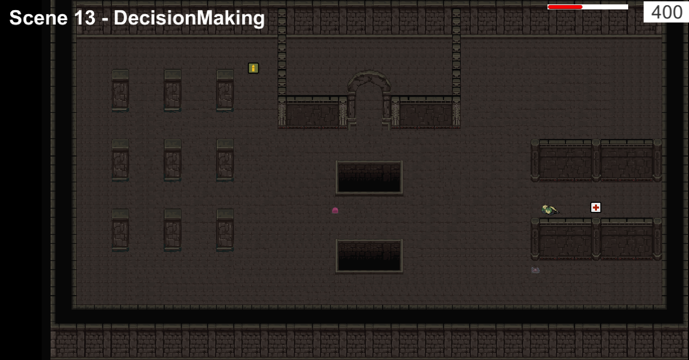
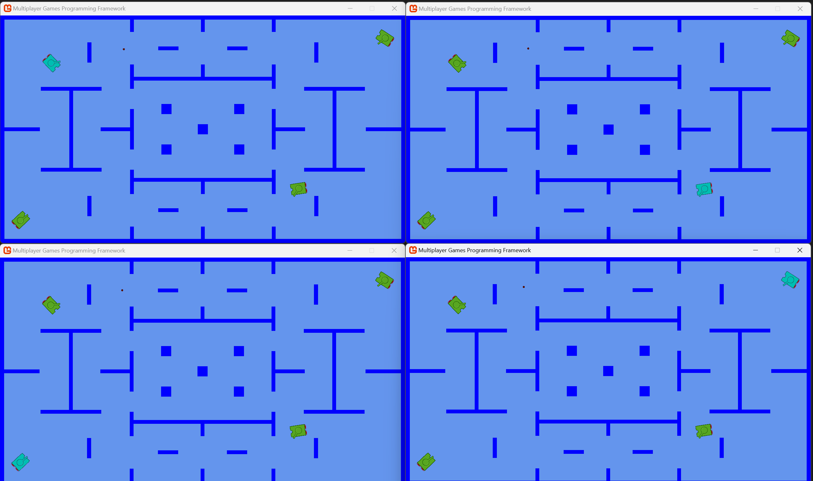
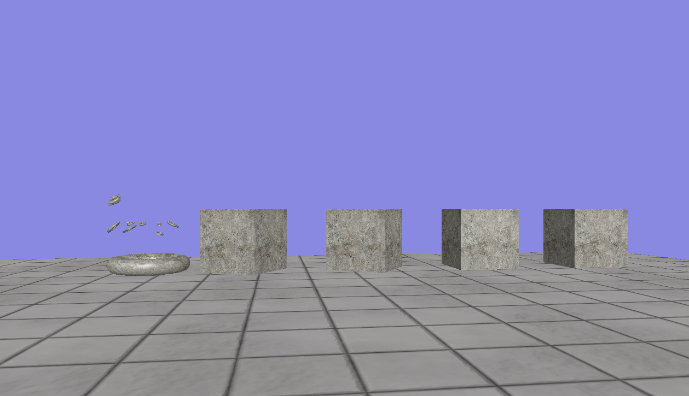
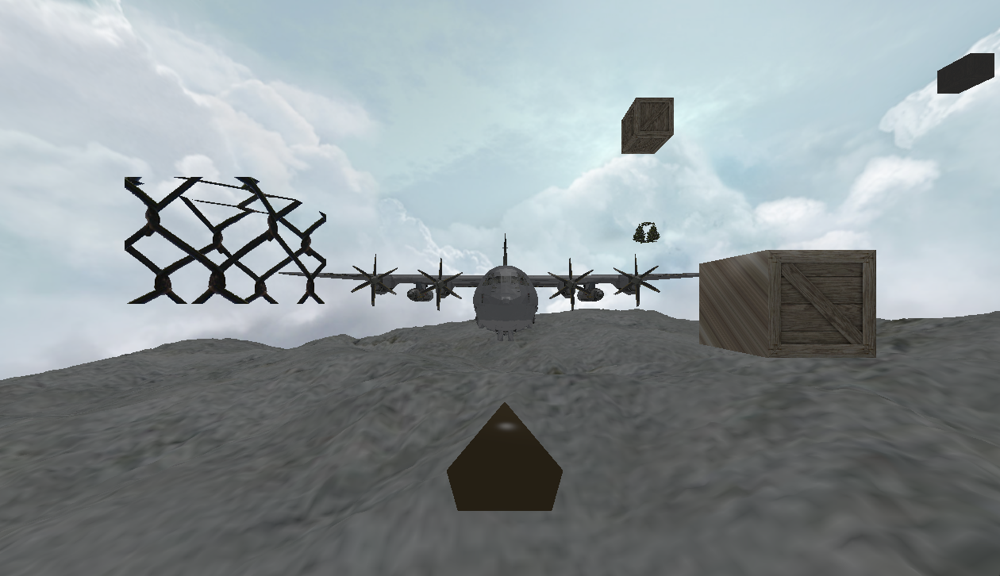
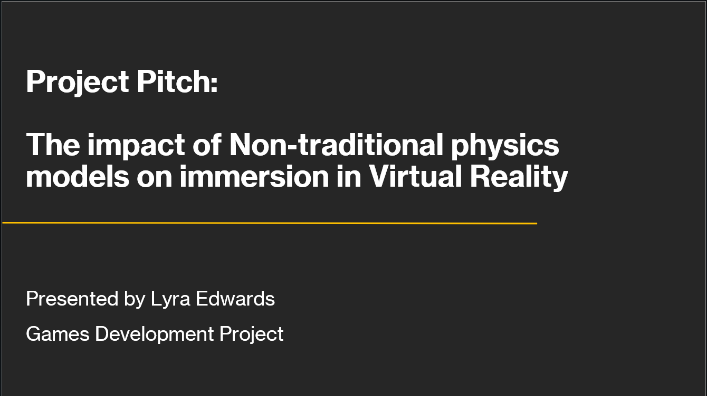

Hi! I'm Lyra Edwards
Welcome to my portfolio
Please feel free to have a look around, and don't hesitate to contact if anything catches your eye!
About Me
Level 6 Undergraduate Student in Computer Games Programming, University of Staffordshire. Proficient with C++ and C# standalone or with Unreal/Unity engine. Relatively familiar with Python as it was my first language. Interests: Virtual Reality, AI in Games, Mechanics Programming and Networking. I also enjoy taking part in games jams and other events.
Portfolio
A selection of my best projects, to give an idea of what I've learnt and what I am particularly good at. These include some of my University projects as well as some of my own work! My personal favourites are here however my other projects are over on my GitHub!

AI

Multiplayer Games Programming

Physics Programming

Real-Time Rendering

Dissertation
Current Projects
This is a summary of what I'm working on right now, and my upcoming projects! To give you an idea of how
I'm trying to apply myself and expand my skills! These projects vary in scale and will be expanded on over time!
LyrEngine
My very own game engine, I've learnt a lot over the course of my degree, from physics to rendering, AI to object handling. And I thought the best way to put that all together would be to make my own game engine completely, this will likely take me a long time, and my intention is to work on this alongside other projects! More information will be shared as I work on it, and it will be given it's own page on my main portfolio once it reaches a functional level.
Check back soon to learn more!
FYP - Further Development
My FYP project is something I'm relatively proud of, I achieved the grade I wanted, however I did not get to achieve
everthing I set out to, for future development, I want to turn the mechanics shown into a more game-like setting. This will
largely involve introducing new ways for players to interact with the world around them and deepen their exploration. It could serve
as a proof of concept similar to that of Antichamber.
Beyond this, I want to further expand the non-Euclidean nature of the game by introducing non-Euclidean rendering, having the
viewport curve away, objects appear to warp etc. There are not many resources out there to assist with this, the main one being
the Hyperbolica devlogs, so this is likely a task that will require a lot of research and time, though it would serve as a very interesting learning opportunity.
Finally, I want to iron out a lot of the bugs in the current build, there are a few key areas for this:
1: Performance. The game currently can only support a limited number of portal renders per frame, as they are very expensive.
Finding ways to optimise these calls and ensure none are done unnecessarily will be a huge opportunity to add more features to the game,
as I am currently quite limited.
2: Portal smoothness. Due the the performance issues, portals in the game have a distinct "seam" down the side, where the renderer has not accounted for
both of the VR eyes, in order to create one smooth looking portal, I would need to render the portal a second time, or change the render mode used by Unity
in the project, something I have had issue attempting to get working before, and had to resort to a multi-pass rendering within the built in pipeline, the least
efficient option, but the only one that seemed to function. I plan on teaching myself a lot more about Unity's render pipelines in an
attempt to understand why this was the case, and how to work around it.
GMTK Game Jam
I love taking part in game jams and one that is upcoming is the GMTK (Game Maker's Tool Kit) game jam! It begins on the 22nd of July and I intend on using the theme of the jam as a springboard to give me an idea to bring together for the jam, before developing further in my own time!
Check back soon to learn more!
Contact